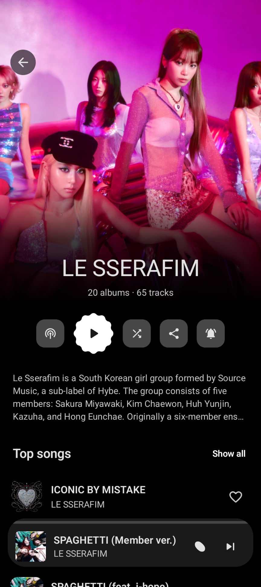
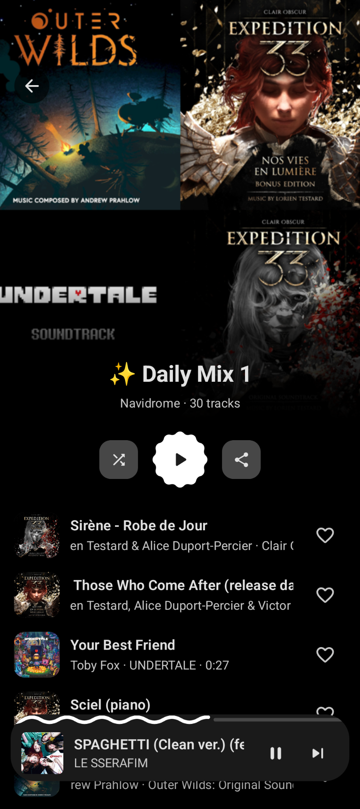
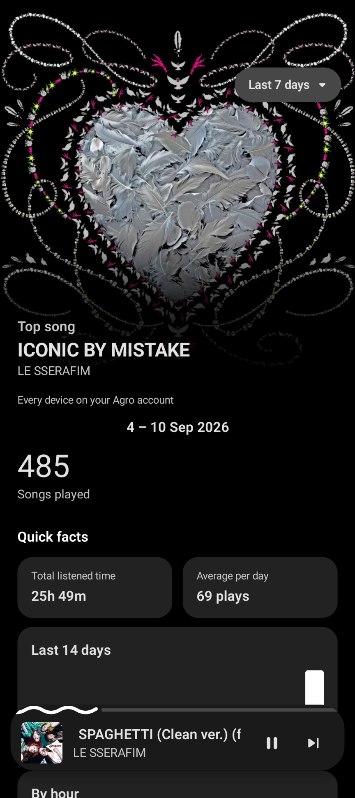
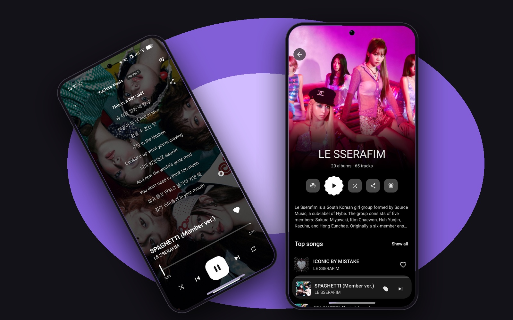
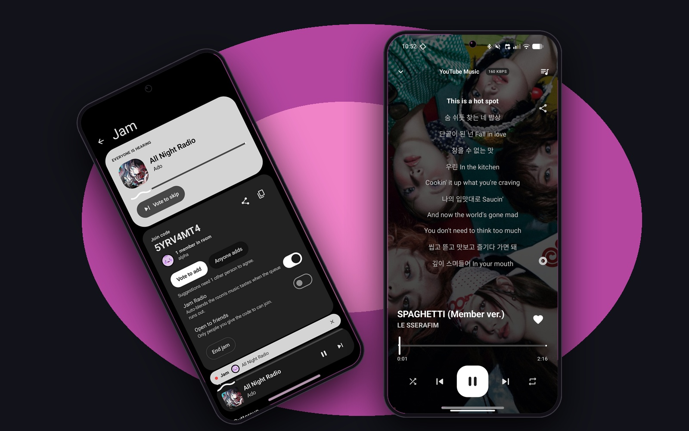
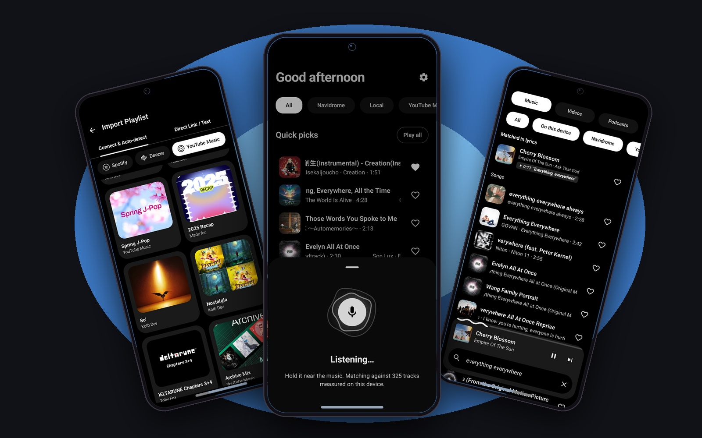
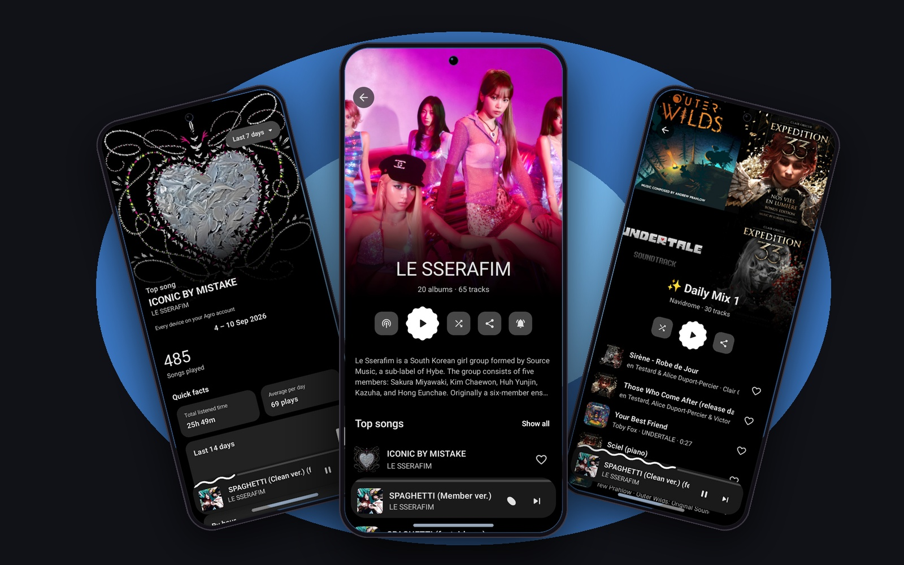

A simple, open-source music ecosystem
A clean, modern music client and self-hosted ecosystem connecting Wander and Wanda, built by the community under AGPL-3.0.



Personalize your music experience with Agro
Rich listening insights, automated year in review, and seamless navigation between local files, Subsonic/Navidrome libraries, and stream sources.
All analytics are calculated entirely on your device with local SQLite queries. Zero surveillance, zero telemetry uploads.
Built for every side of your listening
Agro bridges your music life across all devices without big tech snooping, telemetry, or walled gardens.

Playback Handoff
Transfer active queues, playback progress, and seek positions between phone and computer in real time, without missing a single beat.
- check_circleInstant queue & position sync
- check_circleZero lag between phone and laptop

Live Jam Sessions & Presence
Listen together in real time. Agro coordinates active queues, seek positions, and recipient-encrypted presence without any central server eavesdropping.
- check_circlePresence feeds sealed with E2EE
- check_circleNo centralized party room surveillance

Audio Recognition, Lyrics & Import
Hear something playing in the real world? Wanda identifies tracks on-device via ACR acoustic fingerprinting, fetches synchronized lyrics from LRCLIB, and imports entire playlists seamlessly.
- check_circleOn-device acoustic fingerprinting
- check_circleSynced lyrics & playlist import

Your Library, Everywhere
Local files, Navidrome/Subsonic and stream sources behave as one library. Direct peer-to-peer relay stages media between your own devices, and every statistic is computed on-device with local SQLite.
- check_circleResumable peer transfers & cache budget
- check_circleStats stay local, never uploaded
Complete control over your music experience
Built for listeners who care about quality, privacy, and full autonomy.
- check_circleInstant queue & position sync
- check_circleZero lag between phone and laptop
- check_circlePresence feeds sealed with E2EE
- check_circleNo centralized party room surveillance
- check_circleResumable peer transfers
- check_circleAutomated cache eviction budget
Private by default. Safe by design.
Metadata and credentials are sealed client-side before touching the wire. The server stores ciphertext and holds zero keys.
Passphrases hashed using Argon2id. Scoped device tokens are 256-bit CSPRNG, stored strictly as SHA-256 hashes.
Presence and listen-along streams are individually encrypted per recipient public key, preventing any server leakage.
Two ways in
One lightweight binary with embedded SQLite. Starts up in seconds under systemd, Docker, or behind a reverse proxy.
# Build dashboard, then binary cd dashboard && npm ci && npm run build cd .. && cargo build --release # Run PORT=1674 AGRO_LIBRARY_ROOT=/srv/music \ ./target/release/agro
High uptime, effortless to use, and the smartest Agro server in the network.